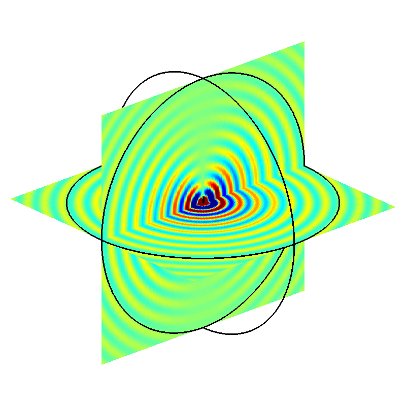
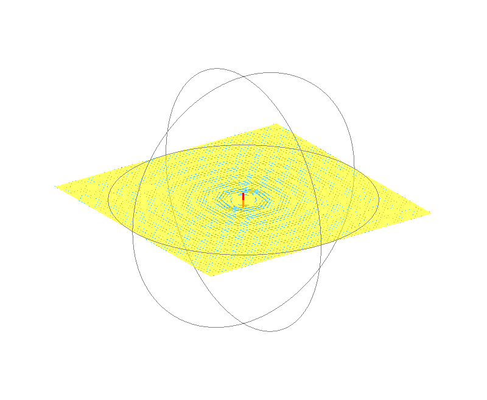
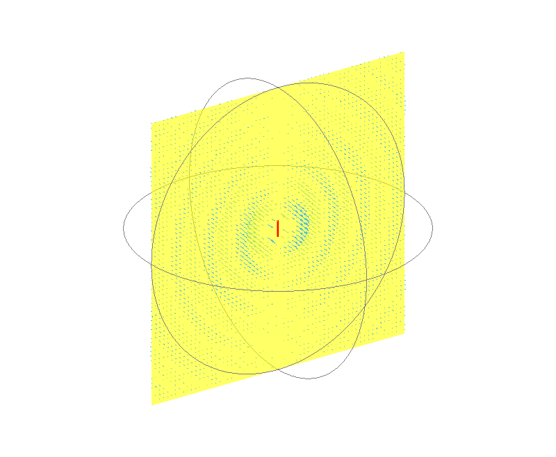
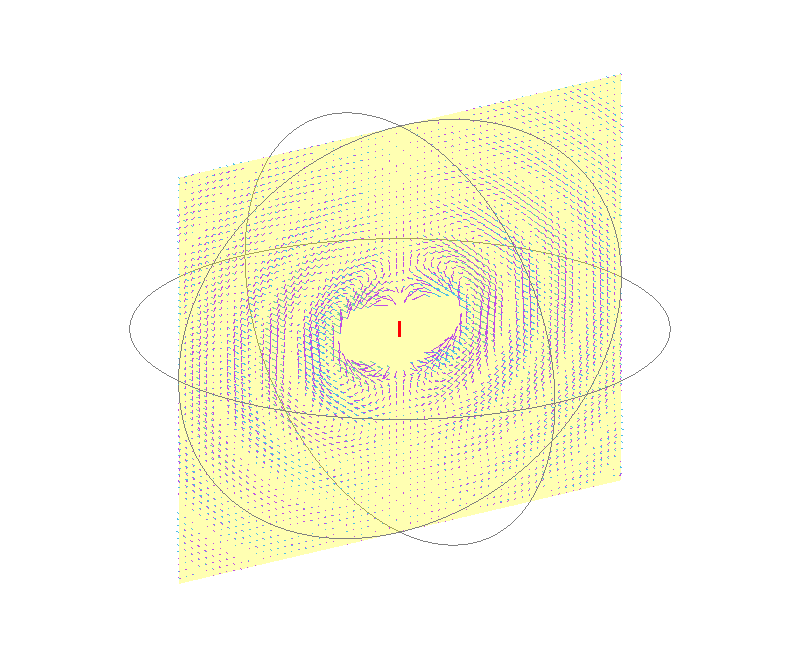
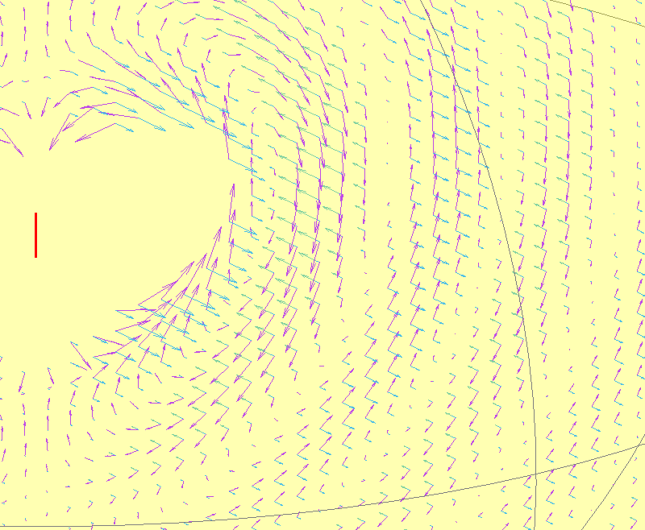
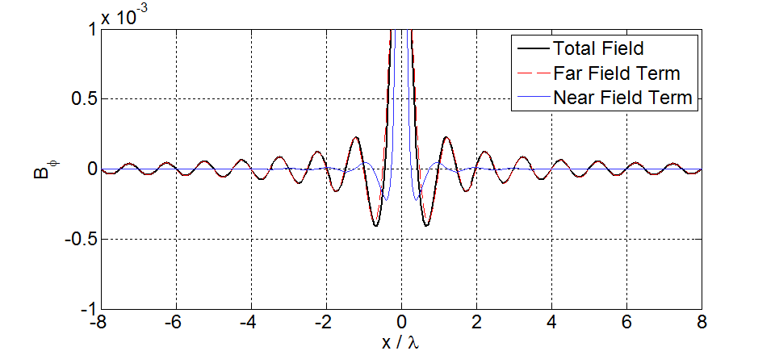
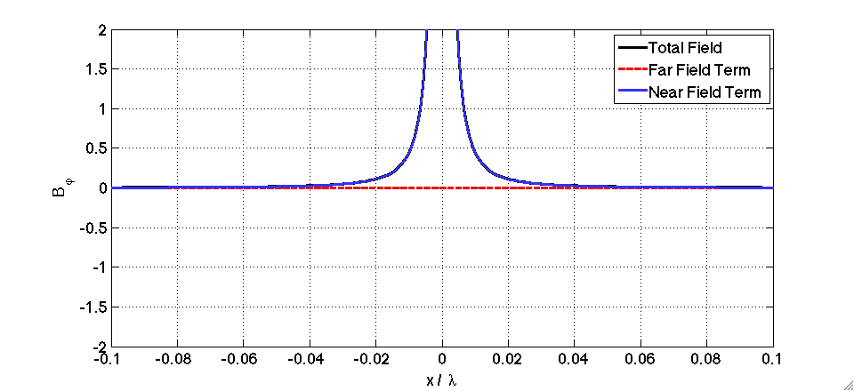
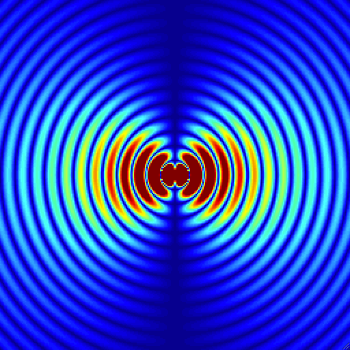
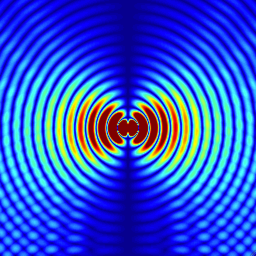
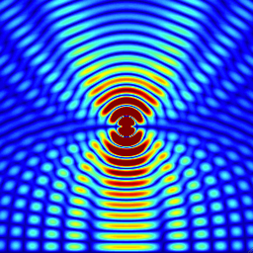

# RF pulse design and simulations: supplementary animations
## Magnetic Field Patterns from Hertzian Dipole Antenna

The antenna is at the centre and oriented vertically. The magnetic field points in the
azimuthal direction, and the colours indicate the strengths of the field (red is
positive, blue is negative, green is zero). We can also visualise this vector field by using
a 3D vector plot. Below shows the magnetic field vectors in a plane in the horizontal plane:

The blue vectors now represent the magnetic field at that position in space - lengths correspond
to strength and the arrows point in the direction of the field. You can see that
the field points circumferentially around the dipole. The directions reverse as the current
inside the dipole oscillates. Note also that very close to the dipole the field behaviour appears
to be out of phase with that further away.
The plot below shows another example, this time a vertical plane:

Notice that now the magnetic field vectors are orthogonal to the viewing plane. The travelling
wave behaviour is very clear on this view. *Note that I excluded vectors very close to the dipole in both of these plots to make the images look less cluttered*
We can also add the electric field to this diagram:

Here the purple arrows are E-field vectors. Note how they are always perpendicular to the magnetic field, and are oriented in the polar direction (in far field).
Zooming in a bit further makes this more obvious:

### A line in the horizontal plane through the antenna:

The total magnetic field can be decomposed into a radiative term (dies as 1/r) and near field term (dies as 1/r^2). At distances of over a wavelength from the antenna the radiative term dominates.

Zooming in much closer to the antenna we see that the 'near field' term dominates. The field oscillates in magnitude but doesn't exhibit traveling wave behaviour. Notice that the near field and far field terms have a 90 degree phase difference.
### Half wave dipole antenna
There are some very informative animations on half-wavelength dipole antennas available on wikipedia.
Here is one (linked directly from wikipedia) showing the current pattern when transmitting:
<img src="https://upload.wikimedia.org/wikipedia/commons/1/10/Dipole_antenna_standing_waves_animation_461x217x150ms.gif" width="70%">
Here is another animation, showing induced currents when the antenna is used as a receiver:
<img src="https://upload.wikimedia.org/wikipedia/commons/d/dd/Dipole_receiving_antenna_animation_6_800x394x150ms.gif" width="70%">
Again, this was linked directly from wikipedia. Please see [here](https://en.wikipedia.org/wiki/Dipole_antenna) for further info
## Reflections and method of images
This material is from the tutorial. The images show the magnitude of the *electric* field from a half wavelength dipole antenna.
#### Vertically oriented dipole:

Left = without ground, centre = fields from image (i.e. reflections), right = total field.
#### Horitzontally oriented dipole:
<img src="images/HW_horiz_noground.gif" width="30%"><img src="images/HW_horiz_image.gif" width="30%">
Left = without ground, centre = fields from image (i.e. reflections), right = total field.
For the horizontal orientation the fields are exactly zero at the ground.